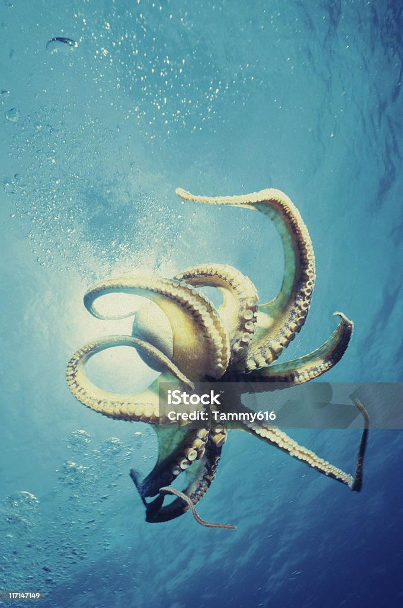
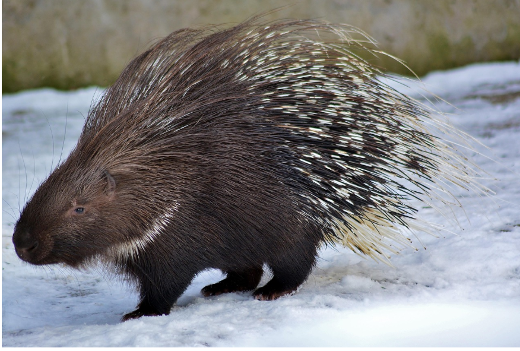
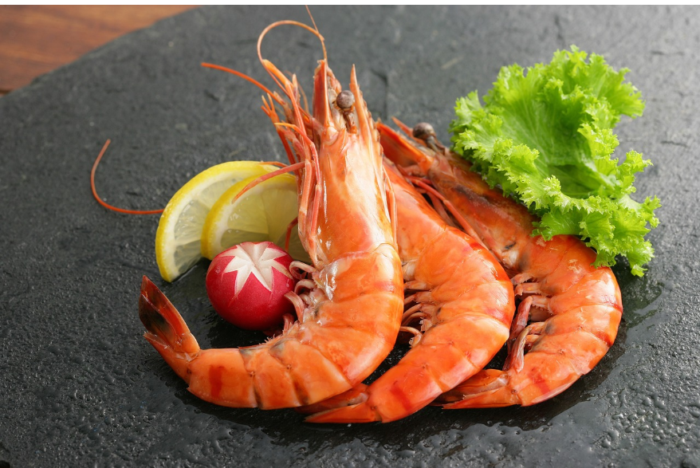
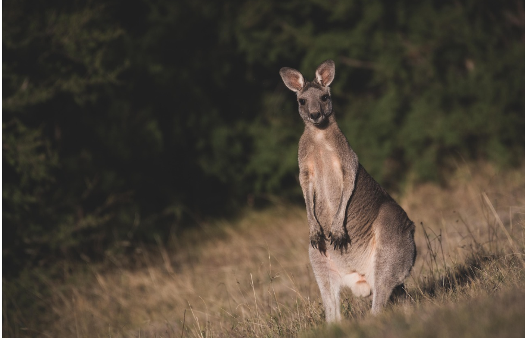
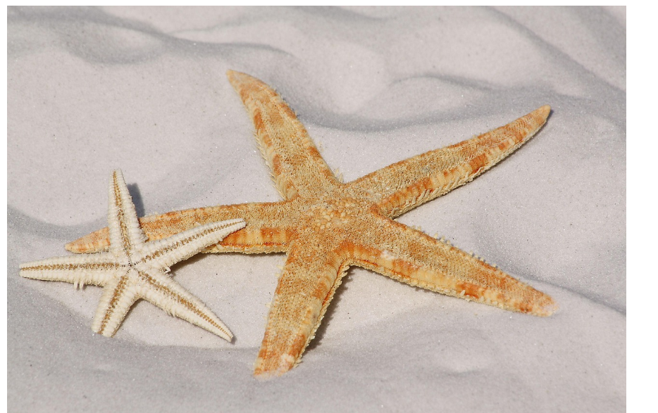

fact 1
Octopuses have three hearts
Two hearts work hard to pump blood to their gills, and the third heart sends blood to the rest of their body. But here’s the twist: when they swim, the big heart takes a break and stops beating. It’s like their version of a nap.
Fact 2
2.Sloths hold their breath longer than dolphins
Even though sloths look like slow-motion fuzzballs, they’ve got some wild abilities. They can hold their breath for up to 40 minutes by slowing their heart rate way down. Dolphins? They usually come up for air every 10 minutes or so.

Fact 3
Flamingos turn pink from their food
Flamingos start out gray and slowly turn pink because of the shrimp and algae they eat. Those foods are packed with natural pigments called carotenoids, which tint their feathers. So in a way, flamingos wear their food.

Fact 4
Frogs can freeze and still survive
Wood frogs in cold places freeze almost completely during winter. Their hearts stop beating and they turn icy. But when spring shows up, they thaw out and hop off like nothing ever happened. Nature’s full of surprises.

Fact 5
A group of porcupines is called a prickle
If you ever see more than one porcupine together, you can say you found a prickle. It’s a real word, and it makes total sense when you think of all those prickly quills in one place.
Fact 6
Shrimp have their hearts in their heads
Well, sort of. Their heart is behind their head, protected by a hard shell. Technically it’s in their thorax, but to a preschooler? It’s right up top and weird enough to be hilarious.
 Fact 7Kangaroos can’t hop backward
Their strong legs and long tails make moving backward impossible. So kangaroos only go forward. Just like kids when they see the snack table.
 Fact 8
Blue whale’s tongue is heavier than an elephant
whales are the biggest animals on Earth, and their tongues alone can weigh as much as an elephant. Imagine that every time your child sticks out their tongue and roars.
Fact 9
Giraffes sleep less than an hour a dayThey nap in tiny bursts, usually standing up. On busy days, they might only sleep 30 minutes total. Yet they never seem grumpy about it. A real parenting mystery.

Fact 10
Starfish don’t have brainsNo brain, no problem. Starfish still know how to eat, move, and grow back arms if one breaks off. They’re basically sea superheroes.
